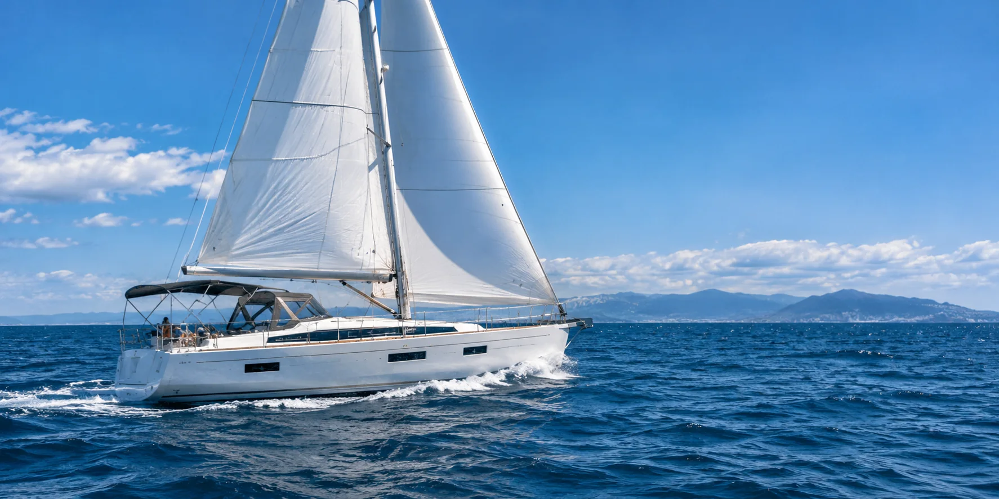

ЦИВ (DSC)
Цифровой избирательный вызов для адресной связи и передачи вызовов бедствия на совместимых моделях.
Радиосвязь для яхт, катеров и коммерческого флота
Standard Horizon — международный бренд радиооборудования, специализирующийся на морской УКВ связи. Его продукция предназначена для обеспечения голосовой связи, обмена цифровыми вызовами и получения навигационной информации на борту судна.
Радиостанции Standard Horizon используются на прогулочных яхтах, катерах и судах коммерческого флота. В ассортименте представлены компактные портативные и функциональные стационарные модели.

Бренд Standard Horizon связан с японской компанией YAESU, известной разработками в области радиосвязи. Морское направление объединяет опыт проектирования радиотехники с требованиями эксплуатации на воде: устойчивостью к влаге, удобством управления и качеством передачи речи.
В линейке Standard Horizon сочетаются проверенные решения морской УКВ связи и современные цифровые функции, востребованные судоводителями.
Цифровой избирательный вызов для адресной связи и передачи вызовов бедствия на совместимых моделях.
Приём информации о судах и отображение целей AIS в радиостанциях, оснащённых соответствующим приёмником.
Определение координат и использование навигационных функций в моделях со встроенным спутниковым приёмником.
Конструкция для работы в морской среде. Степень защиты зависит от конкретной модели.
Шумоподавление и аудиофункции, помогающие поддерживать связь при работе на воде.
Подключение совместимых выносных микрофонов и средств управления на отдельных стационарных моделях.
Компания «КОМПАС-Р» представляет оборудование Standard Horizon на российском рынке. Мы помогаем подобрать радиостанции и совместимые аксессуары под задачи яхт, катеров и коммерческих судов, консультируем по техническим характеристикам и комплектации.
Получить консультацию